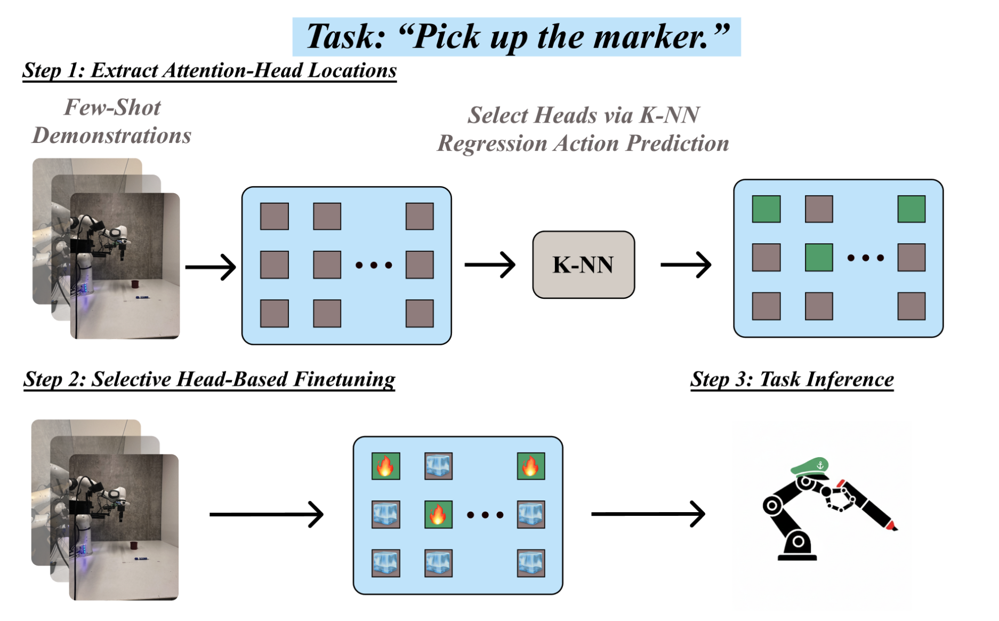

|
Yusen Luo I am currently working as research intern at Learning and Interactive Robot Autonomy Lab (LiraLab), advised by Prof. Erdem Bıyık and BAIR advised by Roei Herzig. I am very fortunate to work with Jesse Zhang and Abrar Anwar. I received my Master's degree in Computer Science from University of Southern California. Before that, I graduated with Bachelor's degree in Computer Science from Beijing Jiaotong University. 🚀 I am currently applying for PhD programs for Fall 2026. |

|
ResearchMy research focuses on enabling robots to efficiently learn and adapt to new tasks with minimal supervision. I am interested in developing scalable learning frameworks that leverage foundation models, rich prior knowledge, serving as structured guidance to achieve rapid task acquisition across diverse environments. My goal is to advance autonomous robot learning methods that bridge the gap between foundation models and real-world deployment, moving toward more adaptable and capable robotic systems. |
|
|
ReWiND: Language-Guided Rewards Teach Robot Policies without New Demonstrations
Jiahui Zhang*, Yusen Luo*, Abrar Anwar*, Sumedh A. Sontakke, Joseph J. Lim, Jesse Thomason, Erdem Bıyık, Jesse Zhang CoRL, 2025 (Oral Presentation) 🏆 Best Paper Award OOD Workshop @ RSS 2025 Best Paper Nominee RoboReps Workshop @ RSS 2025 arXiv / website ReWiND enables sample-efficient adaptation to new tasks by training a language-conditioned reward model and policy from a small set of demonstrations to learn new tasks without additional per-task demonstrations. We beat baselines by 2X in simulation and improve real-world pre-trained policies by 5X in just 1 hour. |
|

|
Robot Steering: Mechanistic Finetuning of Vision-Language-Action Models
Chancharik Mitra*, Yusen Luo*, Raj Saravanan*, Dantong Niu, Anirudh Pai, Jesse Thomason, Trevor Darrell, Abrar Anwar, Deva Ramanan, Roei Herzig In Submission, 2026 arXiv / website Developed a mechanistic fine-tuning approach that selectively adapts attention heads in Vision-Language Action models based on task-specific physical, visual, and linguistic requirements. Demonstrated superior robustness and compute efficiency compared to standard LoRA fine-tuning through comprehensive robot evaluations, enabling faster and more interpretable adaptation of foundation models to diverse robotic tasks. |
|
Website template adapted from Jon Barron. |